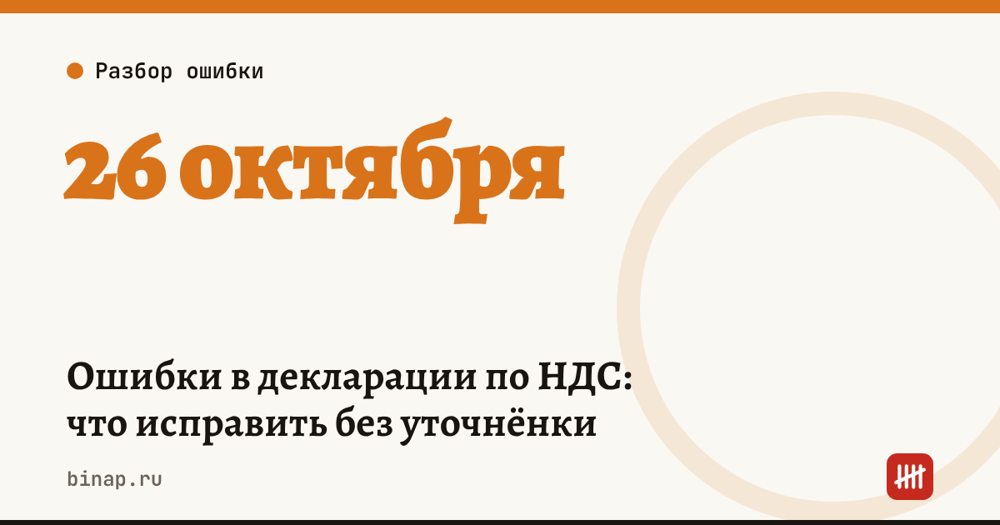

Ошибки в декларации по НДС: что исправить без уточнёнки

Ошибку в декларации по НДС не всегда нужно исправлять уточнёнкой: часть неточностей закрывается пояснениями в ответ на требование налоговой. По данным Клерка, ФНС напомнила, где проходит граница.
Коротко
- Уточнённая декларация обязательна, если из-за ошибки налог к уплате занижен (п. 1 ст. 81 НК).
- Если налог не изменился, уточнёнка не обязательна, хотя ФНС советует подавать её и в этом случае (письмо от 03.12.2018 № ЕД-4-15/23367@).
- Ошибки в номере, дате счёта-фактуры или ИНН контрагента, не повлиявшие на налог, обычно закрываются пояснениями.
- Ошибки в стоимости, сумме НДС, пропущенный счёт-фактура или дубль в книге покупок — повод для уточнёнки.
- Декларацию за IV квартал 2026 года нужно сдать до 25 января 2027 года.
Сроки, изменения и разборы для ИП и самозанятых — каждое утро в Telegram и MAX. Подпишитесь, чтобы не пропустить.
Пояснения или уточнёнка: таблица
| Ошибка | Что делать |
|---|---|
| Неверный номер или дата счёта-фактуры, налог не изменился | пояснения на требование |
| Неверный ИНН или КПП контрагента, налог не изменился | пояснения на требование |
| Ошибка в стоимости или сумме НДС | уточнённая декларация |
| Счёт-фактура не попал в книгу продаж | уточнённая декларация |
| Дубль в книге покупок или вычет по счёту-фактуре с ошибками | уточнённая декларация |
| Вычет по операции, которая НДС не облагается | уточнённая декларация |
Почему важно успеть
Если налог занижен и уточнёнку подали до того, как налоговая нашла ошибку, и до этого доплатили налог и пени, штрафа за неуплату не будет (п. 4 ст. 81 НК). Если ошибку первой нашла налоговая, к доплате добавится штраф.
Расчёт редакции: в книге покупок задвоен счёт-фактура с НДС 120 000 ₽. Вычет завышен на 120 000 ₽ — ровно на столько занижен налог. Подали уточнёнку и доплатили сами — платите налог и пени. Нашла налоговая — к ним добавится штраф 20% от недоимки, то есть 24 000 ₽ до учёта смягчающих обстоятельств.
Что сделать до отправки декларации
- Выгрузите книги покупок и продаж за квартал.
- Сверьте номера, даты и ИНН в счетах-фактурах с договорами и первичкой.
- Отдельно проверьте суммы и ищите дубли в книге покупок: это самые дорогие ошибки.
- Проверьте контрагентов, по которым заявляете вычеты: как бесплатно проверить контрагента.
- Нашли ошибку до срока сдачи — исправьте и отправьте декларацию один раз, без пояснений и уточнёнок.
Платите НДС на УСН? Когда он появляется и какую ставку выбрать, — в статье порог НДС для УСН. Все материалы — в разделе НДС.
Частые вопросы
Нужно ли подавать уточнённую декларацию по НДС, если налог не изменился? Не обязательно. Ошибку можно объяснить в пояснениях, но ФНС рекомендует подавать уточнёнку и в этом случае.
Можно ли избежать штрафа, если нашёл ошибку сам? Да: подайте уточнёнку и доплатите налог и пени до того, как ошибку обнаружит налоговая.
Когда сдавать декларацию по НДС за IV квартал 2026 года? До 25 января 2027 года.